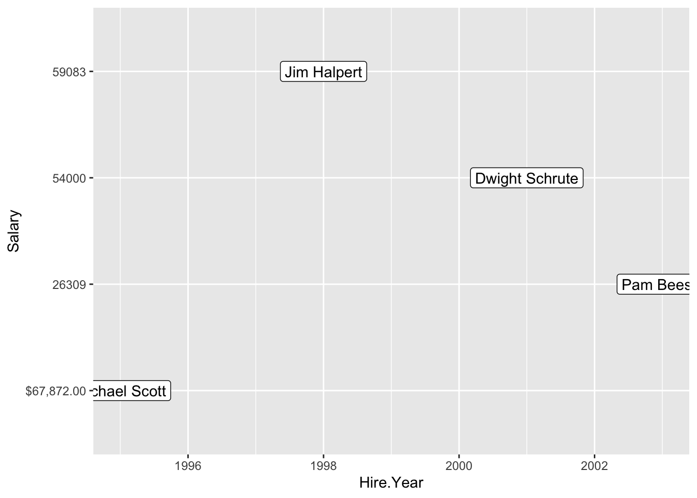

# Your pythagorean theorem code goes hereHomework 2: Finding Your Way in R and Python
HW
Note: This assignment must be submitted in github classroom.
Instructions: Once you have finished this assignment, render the document (Ctrl/Cmd-Shift-K or the Render button). Commit the qmd file and any other files you have changed to the repository and push your changes.
In Canvas, submit a link to your github repository containing the updated files.
Note: Submitting your link in Canvas lets me know that you are ready for me to grade your homework. You can commit half-finished or not-working homework to GitHub, and it is good practice to commit frequently (at least at the end of each work session).
Modes of Execution
Consider the 6 counting words examples in the textbook module (they are in 3 separate ‘your turn’ sections). Look at the code, and then at the information provided for each example. What is different? What is the same? Write 2-3 sentences describing how script mode, interactive mode, and command-line mode differ in R and Python.
Replace this line of text with your 2-3 sentences about script-mode, interactive mode, and command-line mode in R and Python
Programming with Variables
In this section, you’ll demonstrate that you understand how to solve simple math problems using code. First, you’ll want to define variables to represent the variables in the equation. Give the variables values that can be used to determine the value of the variable on the other side of the =. Then, write code to solve the equation for the value of the variable.
Pythagorean Theorem in R
\[a^2 + b^2 = c^2\]
Use the chunk below to define variables \(a\), \(b\), and \(c\), where you define the values of \(a\) and \(b\), and \(c\) is determined mathematically. You may need to find the square root function in R to make this work.
Quadratic Formula in Python
\[x = \frac{-b \pm \sqrt{b^2 - 4ac}}{2a}\]
Use the chunk below to define variables \(a\), \(b\), and \(c\), and then define \(x1\) and \(x2\), the possible values for \(x\). You may find it helpful to define a few additional variables, such as the value of the discriminant \(\sqrt{b^2 - 4ac}\), to make it easier to calculate the results.
# Your quadratic formula code goes hereDebugging practice
Look at the data frame below, which contains 3 columns: Name, Salary, and Hire.Year. You’ve read in this data from the data file online and ideally, you want to plot Hire.Year on the x-axis and Salary on the y-axis (code to do this is provided).
Unfortunately, the data isn’t reading in properly. Identify the problem, propose a solution, and try to implement your solution using functions on the R reference card.
Some things you may want to consider: - gsub, a “find and replace” function. See more details by typing ?gsub into the R console. - You can access columns in a data frame using $: df$col1 will get you col1 of the df object. - You can access items in a vector using []: x[1] will get you the first item in x
Note: You should be able to identify the problem given what you know about R from this week’s reading. You may not be able to implement a solution without some additional research, so if you don’t get that far that’s ok.
# This line reads in a tab-separated data file with a header naming the columns
salary <- read.table("02-data.tsv", sep = "\t", header = T)
# This code plots labels for each individual at location (x, y)
library(ggplot2)
ggplot(salary, aes(x = Hire.Year, y = Salary, label = Name)) +
geom_label()
# This displays the salary object
salary Name Salary Hire.Year
1 Michael Scott $67,872.00 1995
2 Dwight Schrute 54000 2001
3 Pam Beesly 26309 2003
4 Jim Halpert 59083 1998The problem with the data is:
Here is how I solved the problem:
# Your implementation code goes here